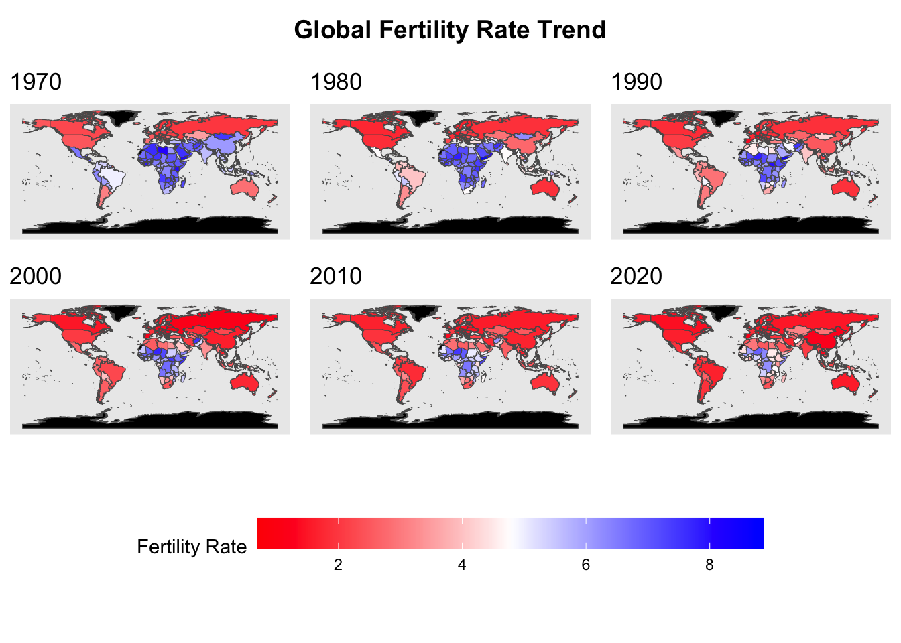

marriage_divorce <- marriage_data |>left_join(divorce_data, by =c("Entity", "Code", "Year")) names(marriage_divorce)[1] <-"Country"names(marriage_divorce)[4] <-"MarriageRate"names(marriage_divorce)[5] <-"DivorceRate"filtered_education <- education_data |>filter(Country %in% marriage_divorce$Country & Year %in% marriage_divorce$Year)filtered_fertility <- fertility_data |>filter(Country %in% marriage_divorce$Country & Year %in% marriage_divorce$Year)filtered_gdp <- gdp_data |>filter(Country %in% marriage_divorce$Country & Year %in% marriage_divorce$Year)filtered_life <- life_data |>filter(Country %in% marriage_divorce$Country & Year %in% marriage_divorce$Year)final_data <- marriage_divorce |>left_join(filtered_education, by =c("Country", "Code", "Year")) |>left_join(filtered_fertility, by =c("Country", "Code", "Year")) |>left_join(filtered_gdp, by =c("Country", "Code", "Year")) |>left_join(filtered_life, by =c("Country", "Code", "Year"))
Warning in left_join(left_join(left_join(left_join(marriage_divorce, filtered_education, : Detected an unexpected many-to-many relationship between `x` and `y`.
ℹ Row 1 of `x` matches multiple rows in `y`.
ℹ Row 11 of `y` matches multiple rows in `x`.
ℹ If a many-to-many relationship is expected, set `relationship =
"many-to-many"` to silence this warning.
ggplot(final_data, aes(x = MarriageRate, y = DivorceRate)) +geom_point(alpha =0.7, color ="blue") +geom_smooth(method ="lm", color ="red", se =TRUE) +# Add a trend linelabs(title ="Marriage Rate vs. Divorce Rate",x ="Marriage Rate",y ="Divorce Rate" ) +theme_minimal() +theme(plot.title =element_text(hjust =0.5, face ="bold") )
`geom_smooth()` using formula = 'y ~ x'
This scatterplot shows the relationship between marriage rates (x-axis) and divorce rates (y-axis) with each blue dot representing a data point. There’s a positive correlation between marriage and divorce rates, as shown by the red trend line with its gray confidence interval band. Marriage rates range from about 2 to 10, while divorce rates range from 0 to about 5. The data points show considerable spread around the trend line, suggesting that while there is a correlation, it’s not a perfect relationship. There appears to be more variability in divorce rates when marriage rates are between 4-6, creating a wider “band” of points in this region. At higher marriage rates (8-10), the data points seem to follow the trend line more closely, though there are some notable outliers, particularly at the highest marriage rates where some points show significantly lower divorce rates than the trend would predict.
3.2 Marriage Rate and Fertility Rate
Code
filtered_data <- final_data %>%filter(!is.na(MarriageRate) &!is.na(fertility_rate))# Line plotggplot(filtered_data, aes(x = Year)) +geom_line(aes(y = MarriageRate, color ="Marriage Rate"), size =1) +geom_line(aes(y = fertility_rate, color ="Fertility Rate"), size =1, linetype ="dashed") +facet_wrap(~ Country, scales ="free_y") +labs(title ="Marriage Rate and Fertility Rate Trends by Country",x ="Year",y ="Rate",color ="Variable" ) +theme_minimal() +theme(plot.title =element_text(hjust =0.5, face ="bold"),axis.text.x =element_text(angle =45, hjust =1),strip.text =element_text(size =10, face ="bold") )
Argentina, Australia, Bolivia, Mexico, Peru, Singapore and Chile have experienced gradual declines in marriage rates. In other countries, such as Ireland and the United Kingdom, marriage rates fluctuated before declining. Countries such as Mexico and Peru started with high fertility rates but then experienced sharp declines. Countries such as Norway and Singapore experienced relatively small declines in fertility and nuptiality. Marriage rates have remained relatively stable compared with fertility in many countries. Countries such as Singapore and the United States show clear trends, with marriage rates stabilizing at lower levels. Taken together, both the marriage rate and the fertility rate show a downward trend in different countries, and in some countries (Ireland, United Kingdom), the marriage rate and the fertility rate seem to be correlated because the trends and shapes of the two lines are similar.
3.3 Fertility Rate Density Plot by High vs Low GDP Countries
Code
final_data <- final_data |>filter(!is.na(gdp_growth) &!is.na(fertility_rate)) |>mutate(GDP_Group =ifelse(gdp_growth >=median(gdp_growth, na.rm =TRUE), "High GDP", "Low GDP") )ggplot(final_data, aes(x = fertility_rate, fill = GDP_Group)) +geom_density(alpha =0.6) +# Semi-transparent fill for overlapping areaslabs(title ="Fertility Rate Distribution: High vs. Low GDP Countries",x ="Fertility Rate",y ="Density",fill ="GDP Group" ) +scale_fill_manual(values =c("High GDP"="blue", "Low GDP"="red")) +theme_minimal() +theme(plot.title =element_text(hjust =0.5, face ="bold"),axis.text =element_text(size =10) )

The above plot is a density plot comparing the distribution of fertility rates for countries grouped by GDP level (High GDP vs. Low GDP) where we calculated by comparing each GDP growth with median value. Both groups have peak around 1.5-2.5, though the low GDP countries show a slightly higher density at this point, meaning that there is a substantial number of countries, regardless of GDP level, within this fertility rate range. Low GDP countries show a notable secondary peak around a fertility rate of 1.2-1.3, which isn’t present in high GDP countries. High GDP countries have more spread in the 2.5-3.5 fertility rate range. Both distributions have long “tails” extending toward higher fertility rates though these become quite sparse. Overall, the distributions suggest that while there is significant overlap between high and low GDP countries, there are some distinct patterns in fertility rates associated with economic development.
3.4 GDP, Marriage Rate and Divorce Rate
Code
plot_data <- final_data %>%group_by(Year) %>%summarize(Avg_MarriageRate =mean(MarriageRate, na.rm =TRUE),Avg_DivorceRate =mean(DivorceRate, na.rm =TRUE),Avg_GDP =mean(gdp_growth, na.rm =TRUE) ) %>%ungroup()library(ggplot2)ggplot(plot_data) +geom_bar(aes(x = Year, y = Avg_GDP, fill ="GDP"), stat ="identity", alpha =0.6) +geom_line(aes(x = Year, y = Avg_MarriageRate, color ="Average Marriage Rate"), size =1) +geom_line(aes(x = Year, y = Avg_DivorceRate, color ="Average Divorce Rate"), size =1, linetype ="dashed") +labs(title ="GDP, Average Marriage Rate, and Average Divorce Rate Over Time",x ="Year",y ="Values",fill ="Variable",color ="Rate Type" ) +theme_minimal() +theme(plot.title =element_text(hjust =0.5, face ="bold"),axis.text.x =element_text(angle =45, hjust =1) ) +scale_fill_manual(values =c("GDP"="blue")) +scale_color_manual(values =c("Average Marriage Rate"="green","Average Divorce Rate"="red" ))
This graph illustrates the relationship between GDP, marriage rates, and divorce rates from 1960 to 2020. The marriage rate (green line) shows a clear downward trend over the 60-year period, declining from around 7 to 5, though it spikes sharply upward near 2020. The divorce rate (red dashed line) remains relatively stable between 2-3 throughout the period, showing only minor fluctuations. GDP (blue bars) demonstrates considerable volatility, fluctuating mostly between 0 and 6, with a dramatic drop to negative values around 2015 before recovering. Notably, despite these significant changes in marriage rates and GDP, the divorce rate maintains remarkable stability over the entire period.
The above correlation matrix heatmap help visualize the pairwise correlations between different numeric variables. Marriage Rate and Divorce Rate are highly positively correlated, indicating that higher marriage rates are associated with higher divorce rates. Marriage Rate and fertility rate also has high correlation. Fertility rate is negatively correlated with Year, which aligns with global trends where fertility rates decrease with higher education and over time. It is surprising that the fertility rate is negatively correlated with life expectancy. GDP growth has weaker correlations with most variables, suggesting it does not strongly align with the other variables in this data set. This heatmap provides a useful overview for identifying patterns and relationships within the data.